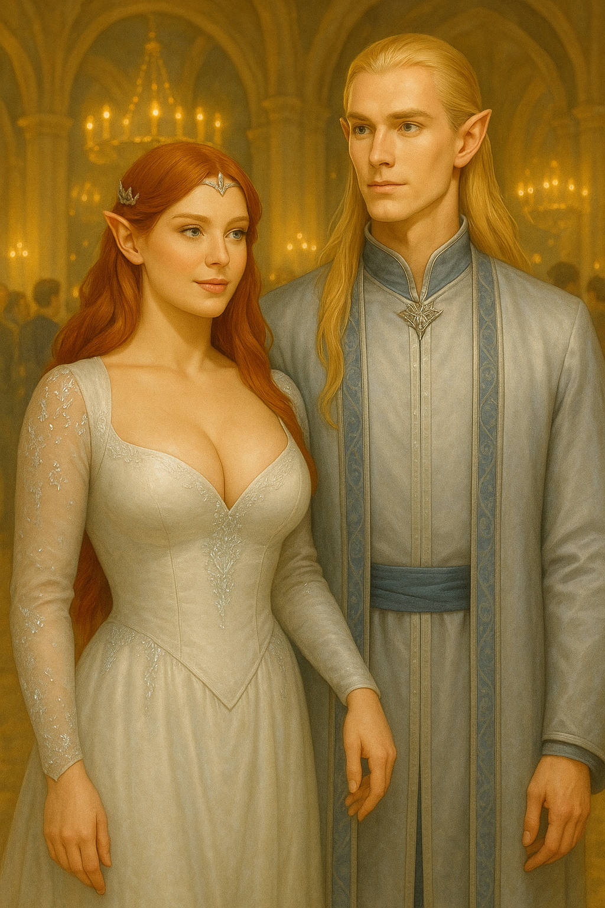
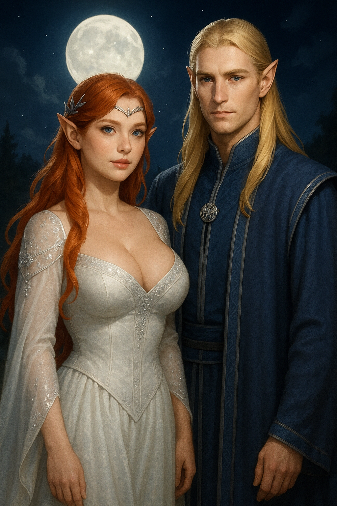
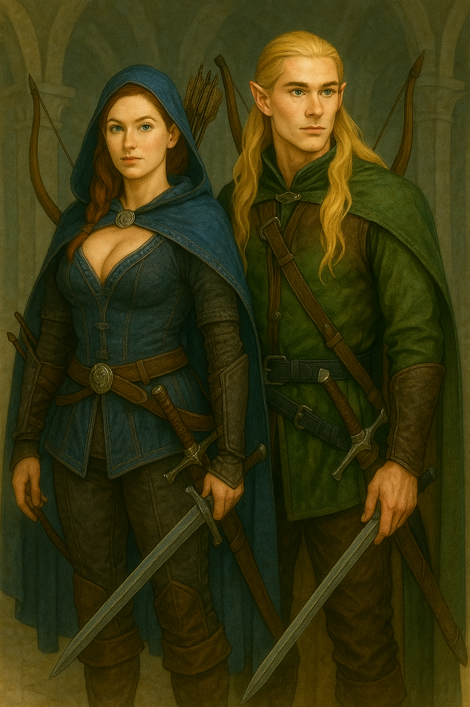

🧝♂️ Quem são Noada e Eira?
Noada, um guerreiro élfico de Valelume, encontrou em Eira, artista das luzes de Lórian, o sopro que faltava em sua jornada. Ela pintava com magia; ele combatia com honra.
💞 A História de Amor
Durante a Terceira Era, seus caminhos se cruzaram ao proteger um santuário escondido. A conexão foi imediata, selada por uma dança de luzes entre os campos encantados.
💬 Palavras Marcantes
“Mesmo na escuridão, tua luz me alcança.” — Eira
“A cada batalha, volto não apenas por meu povo, mas por ti.” — Noada
🖼️ Galeria de Momentos



🌠 E o futuro?
Segundo a lenda, partiram juntos rumo a Eärendor, onde constroem um templo de arte e justiça para todos os povos livres.